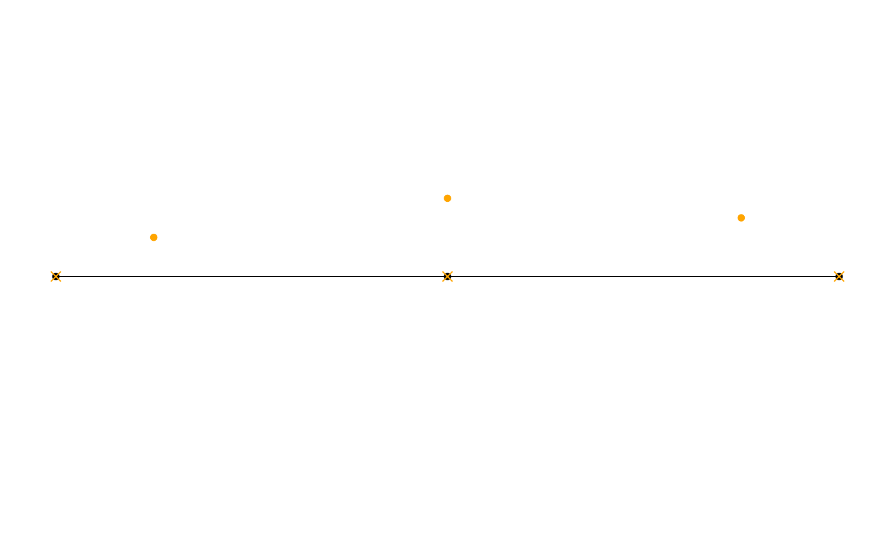
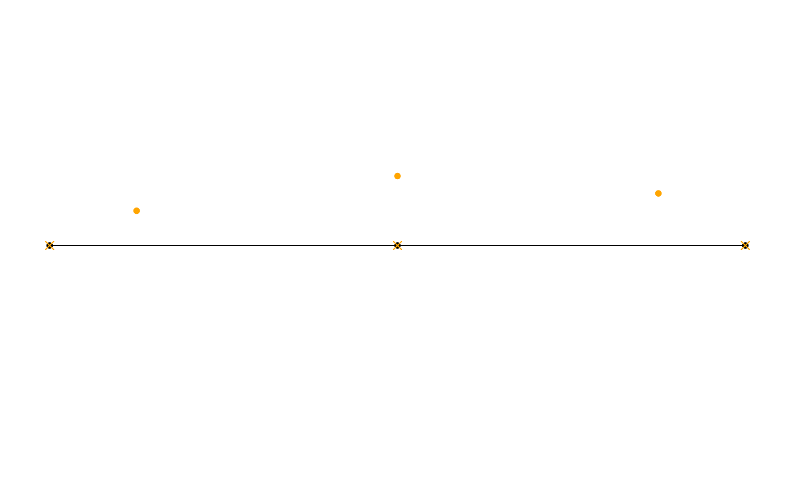

Project spatial points on a spatial network
Arguments
- x
The spatial features to be projected, either as object of class
sforsfc, withPOINTgeometries.- network
An object of class
sfnetwork.- on
On what component of the network should the points be projected? Setting it to
'edges'(the default) will find the nearest point on the nearest edge to each point inx. Setting it to'nodes'will find the nearest node to each point inx.
Details
This function uses st_nearest_feature to find
the nearest edge or node to each feature in x. When projecting on
edges, it then finds the nearest point on the nearest edge by calling
st_nearest_points in a pairwise manner.
Note
Due to internal rounding of rational numbers, even a point projected
on an edge may not be evaluated as actually intersecting that edge when
calling st_intersects.
Examples
library(sf, quietly = TRUE)
oldpar = par(no.readonly = TRUE)
par(mar = c(1,1,1,1))
# Create a spatial network.
n1 = st_point(c(0, 0))
n2 = st_point(c(1, 0))
n3 = st_point(c(2, 0))
e1 = st_sfc(st_linestring(c(n1, n2)), crs = 3857)
e2 = st_sfc(st_linestring(c(n2, n3)), crs = 3857)
net = as_sfnetwork(c(e1, e2))
# Create spatial points to project in.
p1 = st_sfc(st_point(c(0.25, 0.1)))
p2 = st_sfc(st_point(c(1, 0.2)))
p3 = st_sfc(st_point(c(1.75, 0.15)))
pts = st_sf(foo = letters[1:3], geometry = c(p1, p2, p3), crs = 3857)
# Project points to the edges of the network.
p1 = st_project_on_network(pts, net)
plot(net)
plot(st_geometry(pts), pch = 20, col = "orange", add = TRUE)
plot(st_geometry(p1), pch = 4, col = "orange", add = TRUE)
 # Project points to the nodes of the network.
p2 = st_project_on_network(pts, net, on = "nodes")
plot(net)
plot(st_geometry(pts), pch = 20, col = "orange", add = TRUE)
plot(st_geometry(p2), pch = 4, col = "orange", add = TRUE)

par(oldpar)
# Project points to the nodes of the network.
p2 = st_project_on_network(pts, net, on = "nodes")
plot(net)
plot(st_geometry(pts), pch = 20, col = "orange", add = TRUE)
plot(st_geometry(p2), pch = 4, col = "orange", add = TRUE)

par(oldpar)